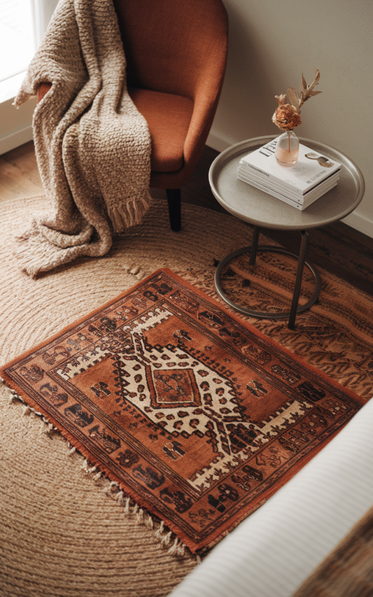
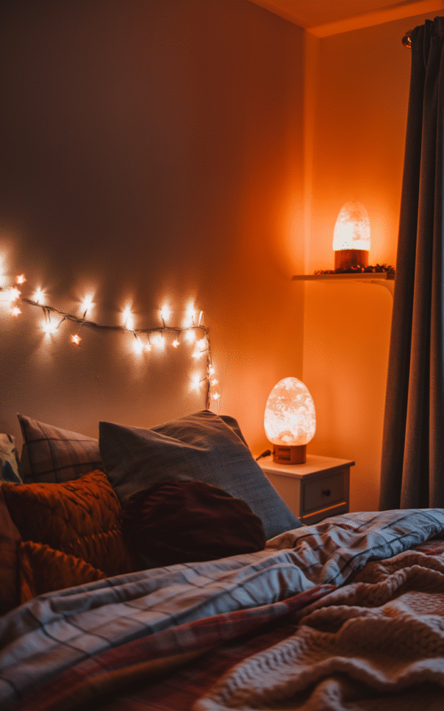
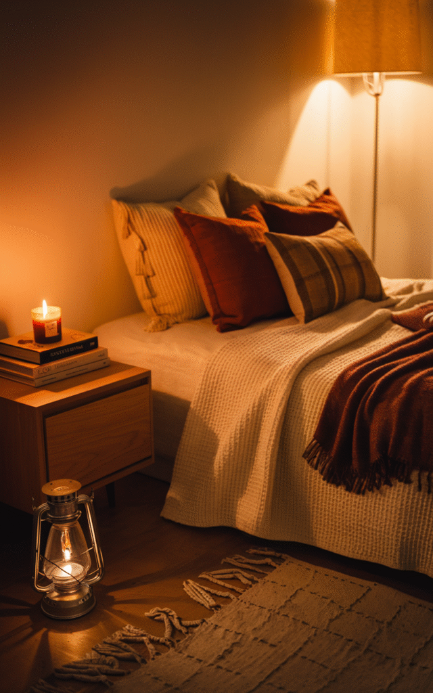
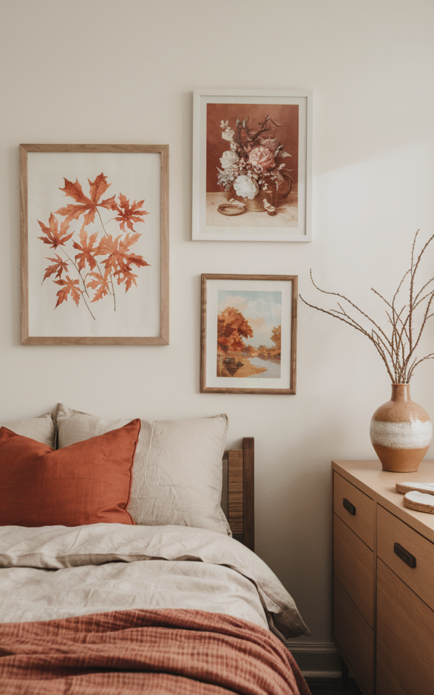
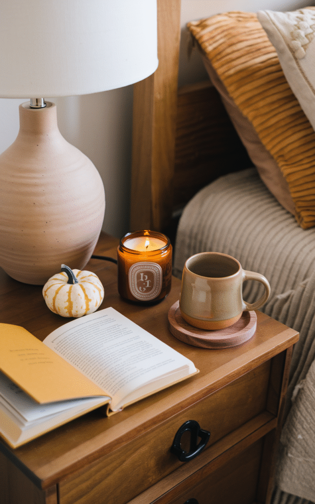
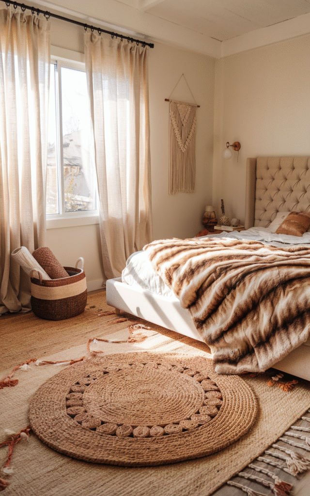
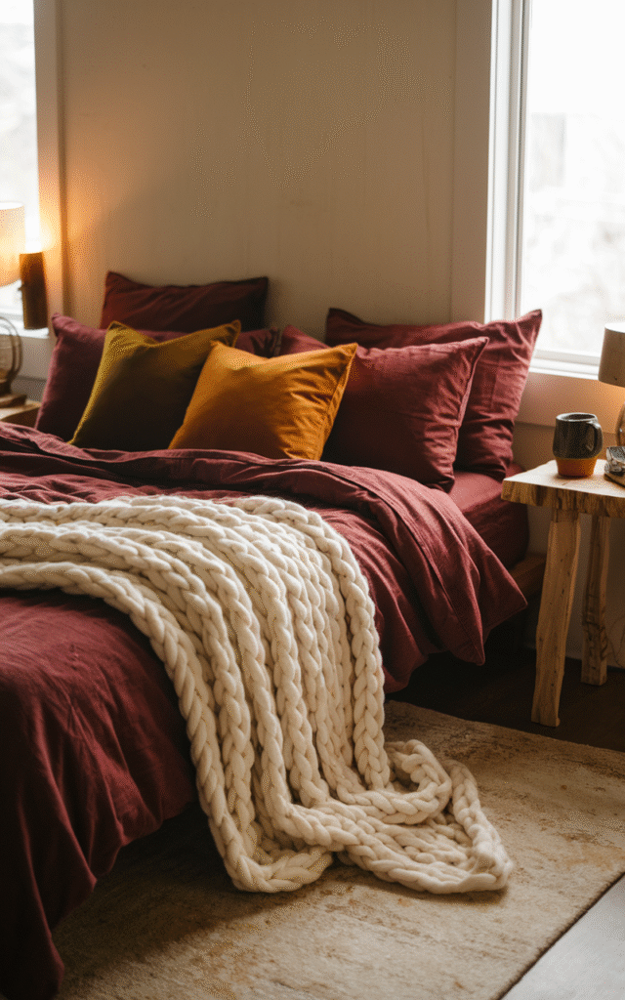
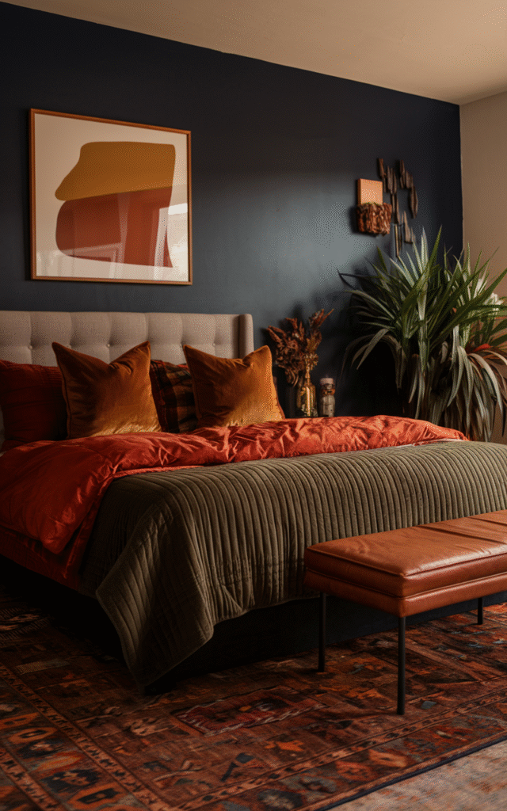

Fall has a way of sneaking back in every year, and with it comes the realization that the bedroom still looks ready for July. Swap the sweaty sheets for something plush, trade the breezy palette for something warmer, and suddenly the whole room catches up to the season.
Fall decorating was never really about pumpkins on every surface. It's about layers, mood, and texture, the kind of room that's genuinely hard to climb out of on a cold morning.
Here are ten ways to get there without turning the bedroom into a haunted hayride.


10 Ways to Make a Bedroom Feel Like Fall
1. Layer the Rugs
This one sounds unnecessary until it's actually tried, and then it becomes very hard to go back.
Starting with a large neutral base rug, jute, sisal, or wool all work, then layering a smaller statement rug on top, something with pattern like plaid, a vintage Persian style, or faux cowhide, builds the look. Pushing it slightly off-center under the bed or in a reading corner gives it a relaxed, unstyled-looking finish.
It's a small move that adds real depth underfoot, and it solves the cold-floor problem that comes standard with fall. Both wins matter.

2. Fix the Lighting Before Anything Else
Overhead lighting is genuinely the enemy of cozy. Flip that ceiling light on and no amount of styling elsewhere is going to save the mood.
Fairy lights draped along a headboard or window do a lot of quiet work. Table and floor lamps with warm-toned bulbs, skipping anything labeled daylight, keep the glow soft rather than clinical, and a salt lamp adds a gentle amber tone that somehow always ends up looking cuter than expected.
Good lighting is the difference between a room that glows and one that feels like it's under interrogation. It's worth getting right before anything else on this list.

suddus 33 FT 100 LED Pothos Vine Fairy Lights, Battery Operated
Shop on Amazon3. Make the Room Smell Like the Season
Walking into a room and feeling instantly calm is almost always the scent doing the work before it's even registered consciously.
A diffuser with clove, cinnamon, or orange oil covers the basics. Wax warmers are a lower-risk alternative to an open flame, linen spray in apple or vanilla works directly on the bedding itself, and scented sachets tucked into a drawer handle the spaces that otherwise go unnoticed.
Combining a good scent with warm lighting and genuinely plush bedding makes the whole room start to feel like it belongs in a different season entirely.

ASAKUKI 500 ml Essential Oil Diffuser, Aromatherapy Humidifier
Shop on AmazonMuse Apothecary Linen Ritual Soothing Linen Spray for Bedding
Shop on Amazon4. Refresh the Wall Art
Walls still showing off a 2021 beach trip are a sign it's time for an update.
Fall art doesn't have to mean literal pumpkins or cursive signage. Pressed autumn leaves, moody florals, abstract shapes in warm tones, or a vintage-style landscape print all work better, something with more range than a seasonal cliché.
Even swapping one or two pieces in an existing gallery wall for something warmer-toned shifts the whole room's mood more than expected.

Sage Green Botanical Wall Art Set of 9, Watercolor Poster Prints
Shop on Amazonuniro Vintage French Country Farmhouse Wall Art Prints, Canvas
Shop on Amazon5. Style the Nightstand for the Season
The nightstand is prime decor real estate that most people completely ignore.
A small stack of books in warm cover tones, a mini pumpkin, real or faux, no judgment either way, a ceramic mug for bedtime tea, and a candle in an amber or gold holder cover the whole seasonal mood on one small surface.
Keeping it intentional rather than crowded matters more here. One styled vignette beats five random objects competing for attention.

Kate Aspen Vintage Glass Tealight and Amber Votive Candle Holders, Set of 6
Shop on Amazon6. Add Texture Everywhere You Can
Texture is the most underrated part of fall decorating. Every color on this list could be nailed perfectly and the room would still feel flat without it.
Woven baskets hold extra blankets while adding warmth. Linen curtains stay soft and airy but still feel seasonal. A faux fur throw is worth trying even if it sounds like a lot, it isn't. And rugs layered on rugs is very much a real, very good idea.
Texture is the detail that makes a space feel finished instead of just decorated.

7. Bring in a Few Natural Elements
Fall is already nature's best aesthetic, so borrowing from it directly beats reaching for anything plastic.
Dried eucalyptus or pampas grass in a ceramic vase does most of the work on its own. A bowl of pinecones brings quiet cabin energy, and a few bare branches in a minimalist container add height without any real effort.
None of this needs to be elaborate. One good vase of dried stems on a dresser changes the whole feel of a room.
8. Swap In Plush Bedding
This is where the real transformation happens, the bed itself.
Summer wants light and airy. Fall wants thick, plush, and genuinely snuggle-worthy. Flannel sheets, a chunky knit throw, a duvet in a deep jewel tone or warm neutral, and more pillows than is strictly necessary, that's the formula.
There's a reason every Pinterest board for this season is just bedding. A good velvet throw during a rainy October evening is genuinely one of life's better small pleasures.

Berkshire Blanket Classic VelvetLoft Solid Throw Blanket
Shop on Amazon9. Lean Into Candles
Candles might be the cheapest, easiest way to make a bedroom feel like autumn arrived overnight.
Going for the obvious scents, cinnamon, apple cider, vanilla chai, a little wood smoke for anyone feeling bold, works well. Taper candles bring drama, candle lanterns work beautifully in a quiet corner, and a tray with a few different heights instantly looks styled rather than scattered.
They don't even need to be lit to do their job. But lighting them shifts the whole room into something closer to spa energy.
10. Let the Walls Go Moody
A bedroom that still reads like a beach house in late October is overdue for a color shift.
Fall colors are cozy colors by nature, burnt orange, rust, mustard, olive, and a deep moody navy for anyone after real drama. None of this requires repainting a single wall.
Swapping pillow covers, bringing in a statement rug, hanging a seasonal print, or just adding a few warm-toned vases and lamps covers it. Small changes, bold shift.

A Few Final Touches
Once the basics are covered, a handful of small additions push the whole room further. A fall-leaning playlist, acoustic, chill, a little indie folk, sets a mood before a single thing visually changes. Wicker or leather storage baskets keep clutter out of sight without looking clinical. A reading chair or floor pouf layered with a throw gives the room a second cozy zone beyond the bed itself.
Keeping it intentional rather than piled on matters here too. Cozy was never supposed to mean cluttered, it's a handful of well-chosen, warm details, not every seasonal item owned stacked in one corner.
Final Thoughts
Ten ideas, and all of them were never actually required to feel the shift. A few scented candles and a genuinely plush throw can do more than a full room overhaul, as long as the right ones get picked.
The bed is about to become real estate spent a lot more time in over the next few months. It's worth the extra attention.
Light the candle, fluff the pillows, and let the bedroom catch up to the season already happening outside the window.
The rest of fall will still be there tomorrow. The cozy bedroom shouldn't have to wait for it.